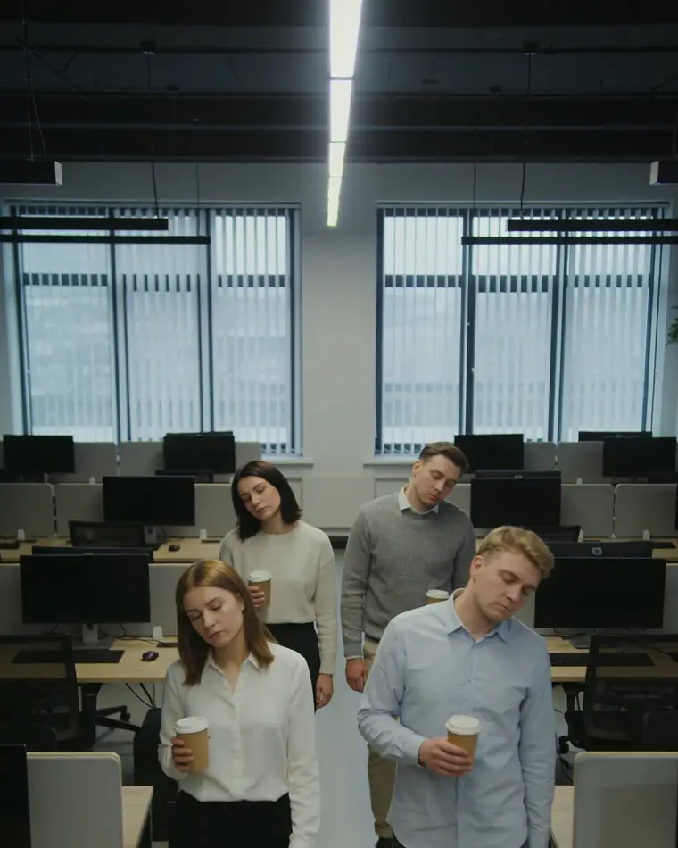
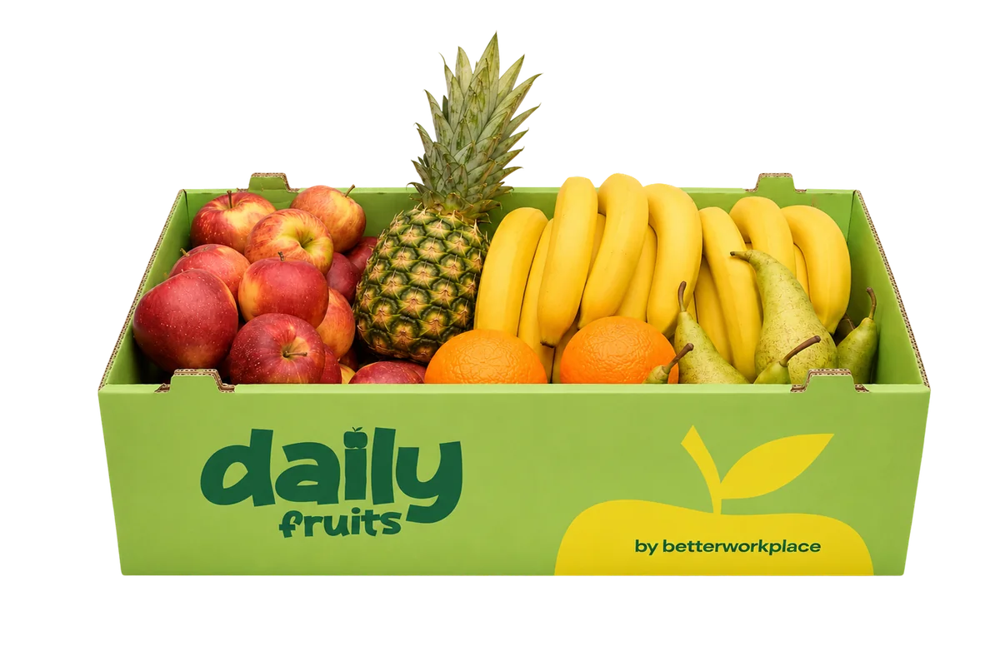
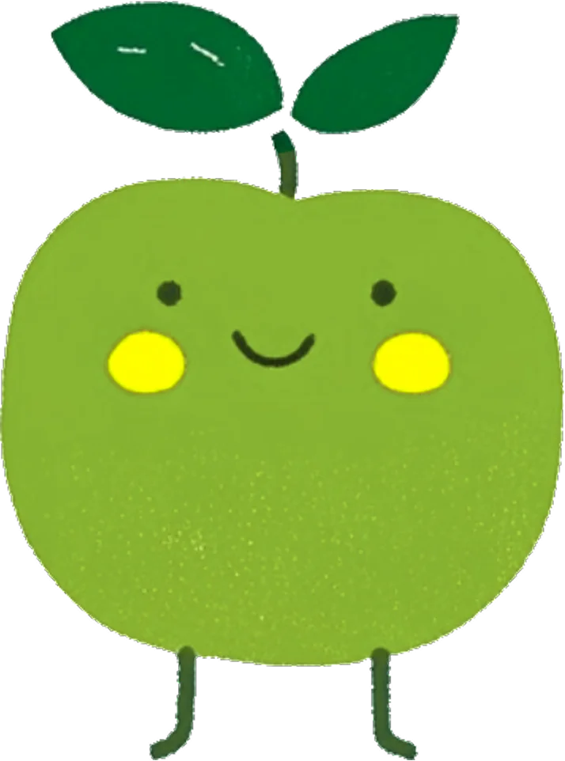

Strona zawiera elementy wygenerowane przez AI
68% pracuje mniej efektywnie,
gdy odczuwa głód.
Okres po urlopach to moment,
w którym widać to najmocniej.
Dane: raport „Nawyki żywieniowe Polaków w 2025 roku"
Przewiń, żeby obudzić biuro
Do końca lata pierwsze
zamówienie gratis
Nie trzeba badań, żeby to rozpoznać. Wystarczy przejść przez open space o właściwej porze.

Przesuń w bok →
To nie jest wina zespołu. To brak kultury organizacyjnej nastawionej na efektywność i wellbeing.
Spotkanie trwa, ale nikt nie wnosi nowego wątku. Cukier z lunchu już opadł, kolejny posiłek dopiero po pracy.
Kawa nie jest problemem. Problemem jest to, że pracuje sama, bez żadnego jedzenia obok.
50% pracowników mówi, że w pracy trudno im się zdrowo odżywiać. Wybór to zwykle automat albo nic.
Przesuń w bok →
Dane: raport „Nawyki żywieniowe Polaków w 2025 roku"
Nie naprawi tego mail o zdrowym trybie życia ani czwarta kawa. Naprawia to jedno: w kuchni codziennie coś stoi. Bez katalogów i wariantów do wyboru.

Owoce, warzywa, kanapki, kawa, soki - wszystko w jednej dostawie, od jednego partnera. Wspólnie ustalamy zakres usługi, częstotliwość dostaw i harmonogram dopasowany do rytmu pracy zespołu.
Co może być w Twojej dostawie:


Obudź swoje biuroBezpłatna wycena, odpowiadamy w 24 h
Podaj liczbę osób. Skład i wycenę przygotujemy po naszej stronie — do końca lata pierwsze zamówienie gratis.
Podajesz liczbę osóbdostajesz propozycjęumawiamy pierwszą dostawę
Wolisz najpierw zobaczyć, co dokładnie dowozimy?
Sprawdź pełną ofertę

Nie jednorazowy catering na akcję. Stałą dostawę, która ma sprawić, że po 14:00 w biurze coś jeszcze się dzieje.
